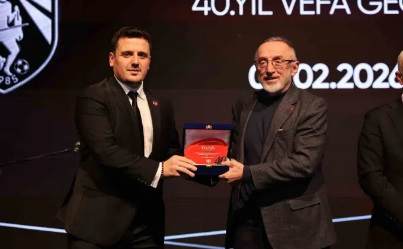
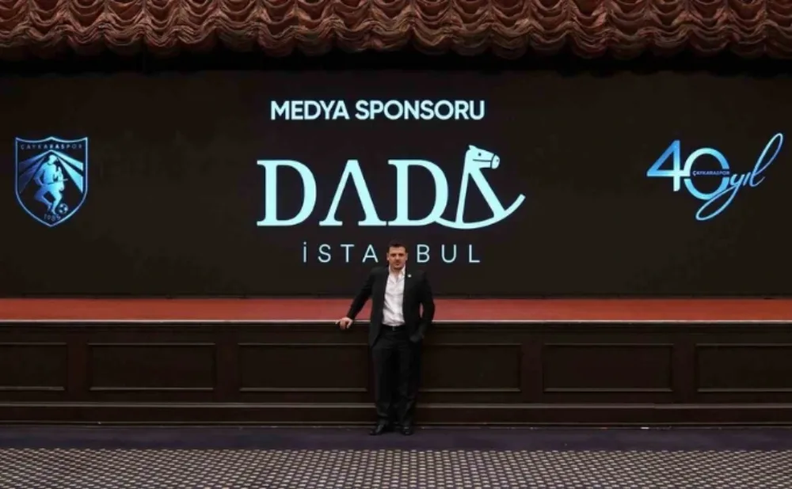

Çaykaraspor’un 40. Yıl Vefa Gecesinde Yasin Yavuz’a Plaket

Çaykaraspor’un kuruluşunun 40. yılı dolayısıyla İstanbul’da düzenlenen “Vefa Gecesi”, spor camiasını, iş dünyasını ve kamu temsilcilerini aynı çatı altında buluşturan önemli bir organizasyon olarak gerçekleşti. Çaykaralı iş insanları, bürokratlar, siyaset temsilcileri ve spor dünyasından birçok ismin katıldığı gece, kulübün geçmişine duyulan vefayı ve geleceğe yönelik vizyonunu ortaya koyan anlamlı bir buluşmaya sahne oldu.
Bu çalışmada Yasin Yavuz, organizasyonun kurumsal iletişim ve medya yapılanmasının planlanması sürecinde aktif rol üstlendi. Kurucusu olduğu Dada İstanbul aracılığıyla etkinliğe hem yönetim hem de medya sponsorluğu desteği sağlayan Yavuz, programın iletişim stratejisi, içerik üretimi ve medya koordinasyonu süreçlerinde katkı sundu. Böylece organizasyonun daha geniş bir kitleye ulaşması ve kurumsal bir yapı içinde yürütülmesi hedeflendi.

Etkinliğe Enerji ve Tabii Kaynaklar Bakanı Alparslan Bayraktar, Anahtar Parti Genel Başkanı Yavuz Ağıralioğlu, Bakırköy Kaymakamı Recai Karal, Hekimhan Kaymakamı Muhammed Fatih Günlü, Bayrampaşa Belediye Başkan Vekili İbrahim Akın ile birlikte çok sayıda belediye temsilcisi, bürokrat, sivil toplum kuruluşu yöneticisi ve iş insanı katıldı. Bu geniş katılım, Çaykaraspor’un yalnızca bir spor kulübü değil; aynı zamanda güçlü bir hemşehri dayanışması ve sosyal bağ platformu olduğunu bir kez daha ortaya koydu.
Yasin Yavuz’un koordine ettiği bu süreçte gece boyunca kulübün 40 yıllık geçmişini yansıtan özel içerikler, vizyon sunumları ve proje anlatımları davetlilerle paylaşıldı. Son dönemde hayata geçirilen saha ve tesis iyileştirmeleri, gençlik ve altyapı yatırımları ile kulübün kurumsal marka ve gelir modeli çalışmaları hakkında bilgi verildi. Ayrıca geleceğe yönelik yeni tesis projeleri, futbol okulu yapılanması, çok branşlı kulüp modeli ve dijital kulüp altyapısı gibi hedefler de program kapsamında aktarıldı.
Programın en dikkat çeken bölümlerinden biri ise 40. yıla özel hazırlanan açık artırma organizasyonu oldu. Özel tasarım formalar, arma çalışmaları ve koleksiyon değeri taşıyan eserler davetlilerin yoğun ilgisiyle açık artırmaya sunuldu. Organizasyona sağladığı katkılar dolayısıyla Çaykaraspor yönetimi tarafından Yasin Yavuz’a plaket takdim edildi. Plaket, Cevahir Holding Yönetim Kurulu Başkanı Yusuf Cevahir tarafından verildi.